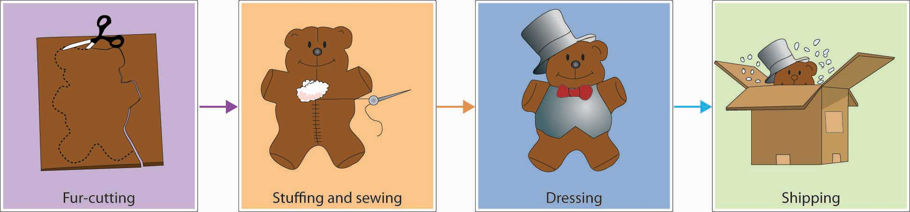
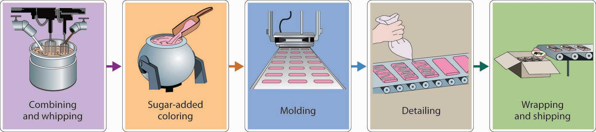
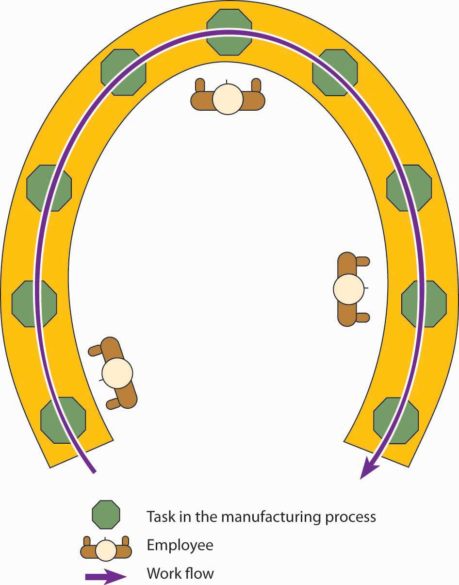

The next step in production planning is deciding on plant layoutArrangement in a facility of equipment, machinery, and people to make a production process as efficient as possible.—how equipment, machinery, and people will be arranged to make the production process as efficient as possible. In this section, we’ll examine four common types of facility layouts: process, product, cellular, and fixed position.
The process layoutLayout that groups together workers or departments that perform similar tasks. groups together workers or departments that perform similar tasks. Goods in process (goods not yet finished) move from one workstation to another. At each position, workers use specialized equipment to perform a particular step in the production process. To better understand how this layout works, we’ll look at the production process at the Vermont Teddy Bear Company. Let’s say that you just placed an order for a personalized teddy bear—a “hiker bear” with khaki shorts, a white T-shirt with your name embroidered on it, faux-leather hiking boots, and a nylon backpack with sleeping bag. Your bear begins at the fur-cutting workstation, where its honey-brown “fur” coat is cut. It then moves to the stuffing and sewing workstation to get its insides and have its sides stitched together. Next, it moves to the dressing station, where it’s outfitted with all the cool clothes and gear that you ordered. Finally, it winds up in the shipping station and starts its journey to your house. For a more colorful “Online Mini-Tour” of this process, log on to the Vermont Teddy Bear Web site at http://www.vermontteddybear.com/Static/Tour-Welcomestation.aspx (or see Figure 11.3 "Process Layout at Vermont Teddy Bear Company").
Figure 11.3 Process Layout at Vermont Teddy Bear Company
In a product layoutLayout in which products are produced by people, equipment, or departments arranged in an assembly line., high-volume goods are produced efficiently by people, equipment, or departments arranged in an assembly line—that is, a series of workstations at which already-made parts are assembled. Just Born, a candy maker located in Bethlehem, Pennsylvania, makes a product called Marshmallow Peeps on an assembly line. First, the ingredients are combined and whipped in huge kettles. Then, sugar is added for color. At the next workstation, the mixture—colored warm marshmallow—is poured into baby-chick–shaped molds carried on conveyor belts. The conveyor-belt parade of candy pieces then moves forward to stations where workers add eyes or other details. When the finished candy reaches the packaging area, it’s wrapped for shipment to stores around the world. To take an online tour of the Marshmallow Peeps production process, log on to the Just Born Web site at http://www.justborn.com/get-to-know-us/our-factory (or see Figure 11.4 "Product Layout at Just Born, Inc.").
Figure 11.4 Product Layout at Just Born, Inc.
Both product and process layouts arrange work by function. At the Vermont Teddy Bear Company, for example, the cutting function is performed in one place, the stuffing-and-sewing function in another place, and the dressing function in a third place. If you’re a cutter, you cut all day; if you’re a sewer, you sew all day: that’s your function. The same is true for the production of Marshmallow Peeps at Just Born: if your function is to decorate peeps, you stand on an assembly line and decorate all day; if your function is packing, you pack all day.
Arranging work by function, however, isn’t always efficient. Production lines can back up, inventories can build up, workers can get bored with repetitive jobs, and time can be wasted in transporting goods from one workstation to another. To counter some of these problems, many manufacturers have adopted a cellular layoutLayout in which teams of workers perform all the tasks involved in building a component, group of related components, or finished product., in which small teams of workers handle all aspects of building a component, a “family” of components, or even a finished product. Each team works in a small area, or cell, equipped with everything that it needs to function as a self-contained unit. Machines are sometimes configured in a U-shape, with people working inside the U. Because team members often share duties, they’re trained to perform several different jobs. Teams monitor both the quantity and the quality of their own output. This arrangement often results in faster completion time, lower inventory levels, improved quality, and better employee morale. Cellular manufacturing is used by large manufacturers, such as Boeing, Raytheon, and Pratt & Whitney,Wayne Chaneski, “ Cellular Manufacturing Can Help You,” Modern Machine Shop, August 1, 1998, http://www.mmsonline.com/columns/cellular-manufacturing-can-help-you (accessed November 1, 2011). as well as by small companies, such as Little Enterprise, which makes components for robots.“Better Production—Manufacturing Cell Boosts Profits and Flexibility,” Modern Machine Shop Magazine, May 2001, http://www.mmsonline.com/articles/manufacturing-cell-boosts-profits-and-flexibility (accessed November 2, 2011), Little Enterprises, Inc., http://www.littleent.com/industries.html (accessed November 2, 2011). Figure 11.5 "Cellular Layout" illustrates a typical cellular layout.
Figure 11.5 Cellular Layout
It’s easy to move teddy bears and marshmallow candies around the factory while you’re making them, but what about airplanes or ships? In producing large items, manufacturers use fixed-position layoutLayout in which workers are moved to the product, which stays in one place. in which the product stays in one place and the workers (and equipment) go to the product. This is the arrangement used by General Housing Corporation in constructing modular homes. Each house is constructed at the company’s factory in Bay City, Michigan, according to the customer’s design. Because carpenters, electricians, plumbers, and others work on each building inside the climate-controlled factory, the process can’t be hindered by weather. Once it’s done, the house is transported in modules to the owner’s building site and set up in one day. For a closer view of General Housing Corporation’s production process, go to the General Housing Web site at http://www.genhouse.com.
(AACSB) Analysis
As purchasing manager for a company that flies corporate executives around the world, you’re responsible for buying everything from airplanes to onboard snacks. You plan to visit all the plants that make the things you buy: airplanes, passenger seats, TV/DVDs that go in the back of the passenger seats, and the specially designed uniforms (with embroidered company logos) worn by the flight attendants. What type of layout should you expect to find at each facility—process, product, or fixed-position? What will each layout look like? Why is it appropriate for the company’s production process? Could any of these plants switch to a cellular layout? What would this type of layout look like? What would be its advantages?